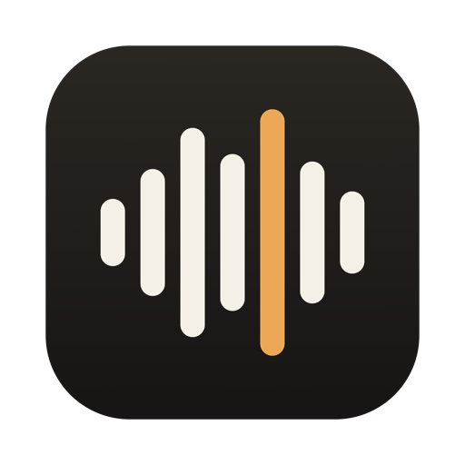
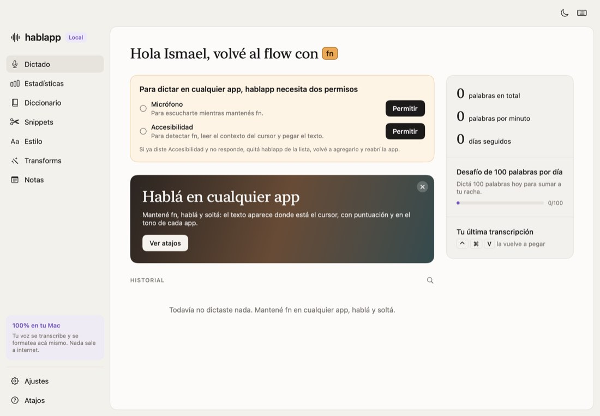
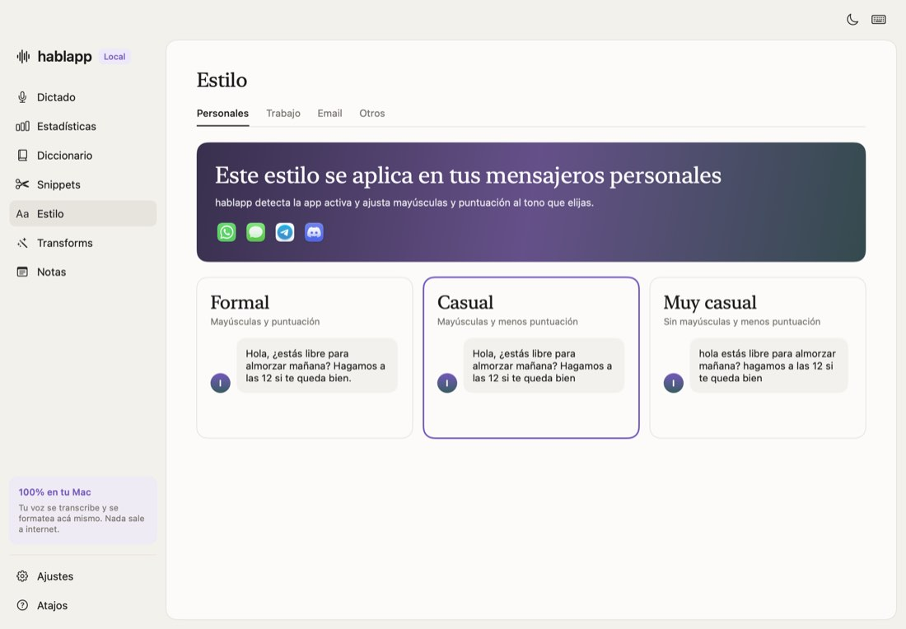
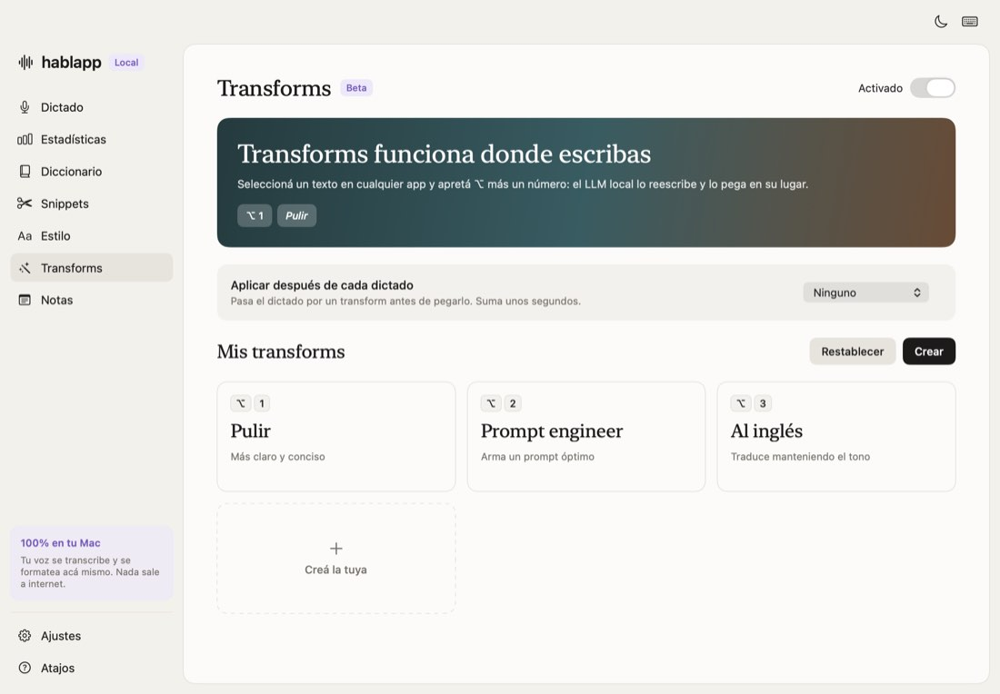
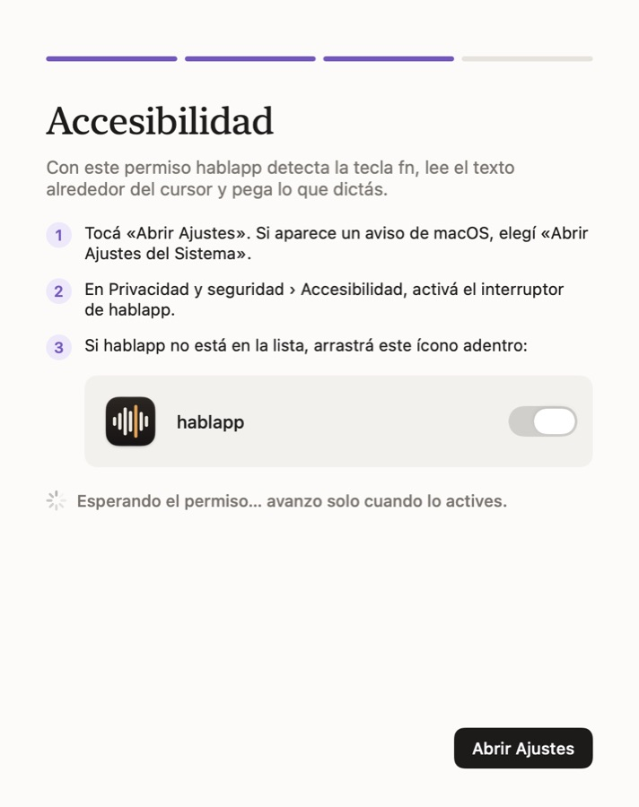

Tu voz se transcribe en tu Mac. Mantén fn, habla y suelta: el texto aparece donde está el cursor, con puntuación y en el tono de cada app.
Versión 0.4.1 · macOS 26 · Apple Silicon · Gratis y de código abierto

Sin ventanas intermedias: hablas y el texto aparece en la app que estés usando.
Mantén fn en cualquier app, habla y suelta. hablapp transcribe, agrega la puntuación y pega el texto en el cursor.
Cuando quieras dictar un rato largo, activa el modo manos libres con un atajo y olvídate de la tecla.
Selecciona un texto y dile qué hacer con él: reescribirlo, acortarlo o cambiarle el tono.
Selecciona un texto y pulsa Control + Command + 1 a 9 para aplicar un transform. Puedes desactivar estos atajos y conservar los transforms automáticos por app.
Más formal en el correo, más suelto en el chat.

Tus atajos de texto, a un gesto de distancia.

La transcripción se hace en el equipo, con el motor de voz de Apple (o whisper.cpp si lo prefieres). El formato y los transforms locales usan Apple Intelligence. No necesitas una cuenta para dictar y no hay analítica.
La mejora de prompts con OpenAI es opcional y viene desactivada. Si la activas, se envían el texto del pedido, las condiciones que debe conservar y las instrucciones del transform con tu propia clave. No se envían audio, capturas, historial ni el texto completo de la ventana. La clave se guarda en el Llavero de macOS y el consumo se cobra en tu cuenta de API.
El contexto de pantalla usa Accesibilidad para reconocer nombres y términos. No toma capturas ni guarda el texto de la ventana en el historial. Puedes desactivarlo en Ajustes › Datos y privacidad.
Hablapp también se conecta a GitHub para consultar y descargar actualizaciones. Puedes revisar el código y los detalles de privacidad.
hablapp todavía no está notarizada por Apple, así que la primera apertura lleva un paso extra.
La búsqueda de actualizaciones viene activada. La app avisa cuando hay una versión nueva; tú decides cuándo instalarla y reiniciar.

hablapp es gratis y lo seguirá siendo. Si te ahorra tiempo y quieres ayudar a que siga creciendo:
Soy Ismael Briasco. Llevo más de 25 años en negocios digitales y hoy doy conferencias, formación y mentoría a líderes ejecutivos y founders. Vivo entre Mijas y Marbella. Uso Claude a diario, con Cowork, Code, MCP y Skills, y creo que la IA no reemplaza a los líderes: acelera a los que ya saben. hablapp es una herramienta para dictar en cualquier app sin mandar la voz a la nube. La comparto como código abierto por si también te sirve a ti.
Sí. hablapp es gratis y de código abierto, con licencia MIT.
Para detectar la tecla fn, leer el contexto del cursor y pegar el texto en la app que estés usando. Sin ese permiso no puede escribir por ti.
Sí. La transcripción no la necesita. El formato y los transforms locales dependen de ella. La mejora opcional de prompts utiliza tu cuenta de API de OpenAI.
En Ajustes › Mejora de prompts, añade tu clave de API de OpenAI y pulsa Guardar y activar. Después utiliza el transform Prompt engineer. Cada mejora realiza una reescritura y una revisión independiente; si falla o no supera los controles, se conserva el dictado. Tu suscripción a ChatGPT no incluye consumo de API.
No. hablapp requiere macOS 26 y un Mac con Apple Silicon.